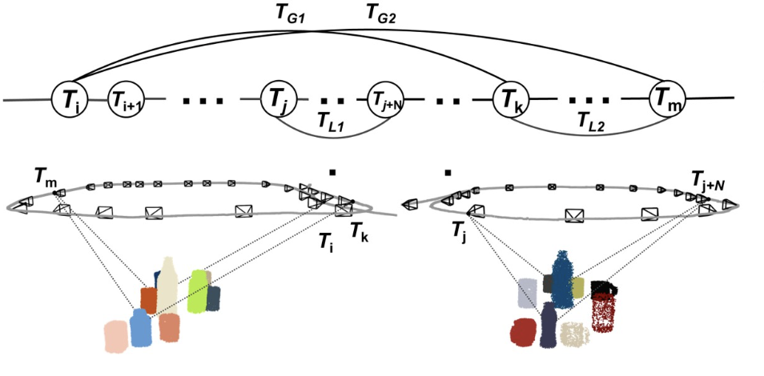

NeuSE: Neural SE(3)-Equivariant Embedding for Consistent Spatial Understanding with Objects
RSS 2023
neuse.png
4 media files grouped by the listed publication venue and year.
4 of 4

RSS 2023
neuse.png
RSS 2023 · Alternate media
neuse.mp4
RSS 2023
structdiffusion_preview.mp4
RSS 2023
diffusion_preview.mp4
No matches.